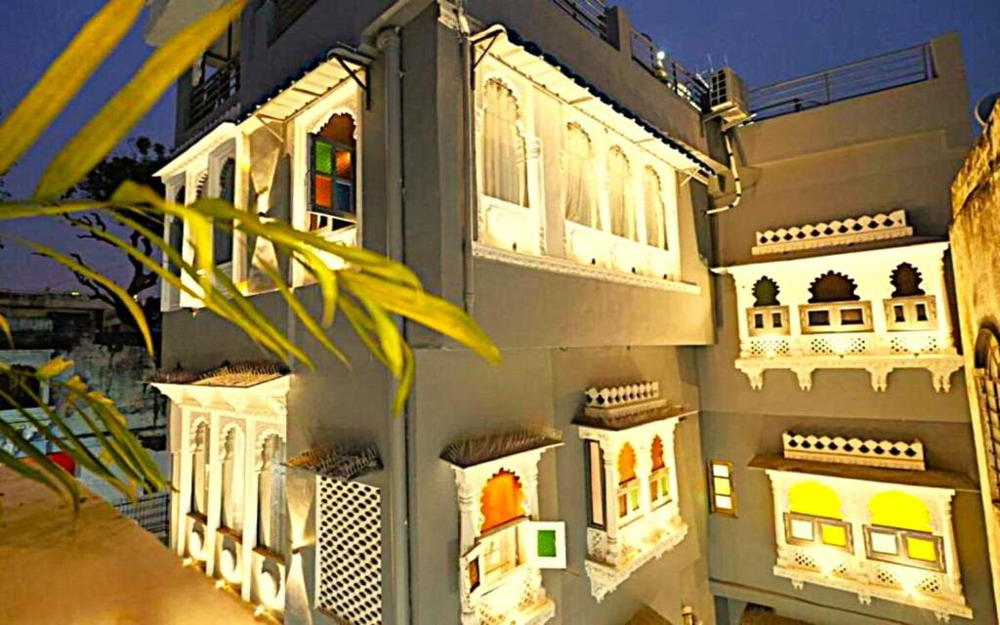

3 Raahi
- Room
- 3 beds in a 6-bed dorm with its own bathroom
- Where
- Jagdish Chowk, 30 m from Jagdish Temple; City Palace and Gangaur Ghat a 2-minute walk
- Rating
- 8.7 on Booking.com (215 reviews)
- Cost
- ₹6,500 total · ₹2,167 each
- Paid
- Paid online, non-refundable
- Arrival
- About 09:30 on Thu 17 from Reti Stand; early bag drop requested
Confirmation is in our shared Drive folder · Photos ↗